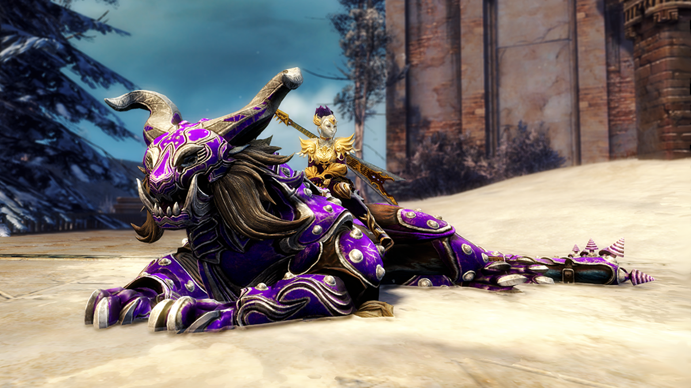

12.03.2019
Newsy | Mounty
Do gry zawitał siódmy mount
Domeną mountów aż do ostatniego patcha było PvE. Aktualnie stwierdzenie to należy zaktualizować, ponieważ oprócz trybu PvE mounty zawitały również do WvW. By jednak uniknąć potencjalnych problemów z implementacją zmian w trybie WvW dane nam będzie korzystać tylko z najnowszego mounta – Warclawa. Będzie on również dostępny w trybie PvE, jednak jego użyteczność będzie mocno ograniczona, z racji iż wszystkie masterki rozwijające naszego wierzchowca zostały ograniczone jedynie do trybu WvW. Na wspomnienie zasługuje jednak najwyższy damage jaki zadaje ten mount po użyciu tzw. Engage Skilla.
Jak zdobyć mounta?
Zdobycie mounta nie powinno nastręczyć większych problemów - nie wymaga angażowania funduszy, ani wykonywania szczególnie obciążających gracza zadań. Szczegółowo opisuje to ten poradnik, a skrót znaleźć możesz poniżej.
Zodbycie mounta to kwestia zdobycia dla niego pancerza. Zanim jednak omówię szczegółowo jak zdobyć poszczególne części pragnę nadmienić, że całość należy zacząć od wydania min. 1 punktu, który zdobywamy za rangi na WVW w dedykowanym drzewku umiejętności. Pancerz dla Warclawa składa się z:
- Emblematu: zdobywanego poprzez ww. wydanie jednego punktu.
- Naszyjnika: zdobywanego poprzez zajęcie keepa.
- Rogów: zdobywanego poprzez zajęcie campa.
- Siodła: zdobywanego poprzez zajęcie wieży.
- Naczółka: zdobywanego poprzez ukończenie ddykowanego (jednarozowego) reward tracka.
- Napierśnika: Do kupienia za 50 WvW Skirmish Ticketów.
- Nagolenników: Do kupienia za 250 Badges of Honor.
- Nazadnika: który wydropić musimy z NPC w okolicach wrogich wież, keepów, czy stonemista. Prawdopodobieństwo, że wypadnie wynosi około 10%
Dalej pozostaje nam już tylko zakup mounta za 8g i (opcjonalnie) robienie powiązanych achievementów.
A na koniec tematycznie powiązany kawałek.